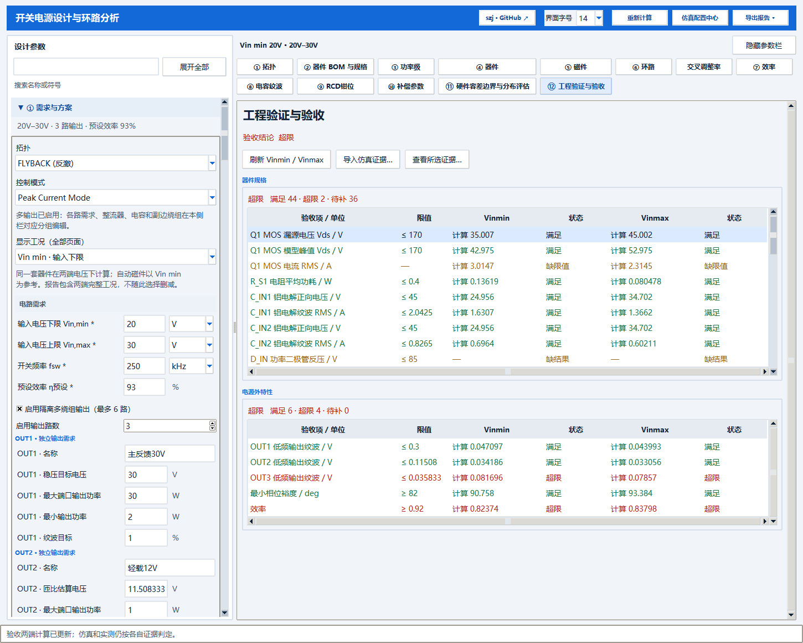
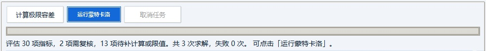

13 工程验证与验收
用双端点表核对器件规格和电源外特性，查看各端点判定所依据的计算、仿真和实测。
电源单元 → ⑫ 工程验证与验收
操作步骤
- 刷新两端计算 点击“刷新 Vinmin / Vinmax”，按当前硬件更新两端计算。仿真资料从独立运行结果导入。
- 核对限值和来源 先读器件规格和电源外特性两组结论。选中一行后点击“查看所选证据…”，在对应端点核对限值、来源和裕量。
- 导入仿真 点击“导入仿真证据…”，选择当前硬件对应的 comparison.json 或包含该文件的对比 ZIP。联合报告使用的仿真电路以回填后的硬件作为匹配依据。
- 录入并保存实测 在对应端点填写实测值、仪器或台账号及测试条件。勾选“确认对应当前硬件与本工况”，点击“应用本工况实测”，再保存设计 JSON 或系统工程。

先读两组和各输入端点，再点选指标查看依据与实测。截图来自旧版，当前相位裕度验收线为严格大于 45°。

极限容差发现超限后，「运行蒙特卡洛」可用。
输入字段
| 字段或选项 | 单位或取值 | 输入的含义及用途 |
|---|---|---|
| 器件规格限值 | 按表列单位 | 从器件 BOM 与规格、磁件参数读取电容、半导体、电阻及磁件的限值。 |
| 电源外特性目标 | Vpp、°、效率比例 | 纹波和效率读取需求目标。最小相位裕度须严格大于 45°。 |
| 实测值、来源与测试条件 | 按表列单位；文本 | 记录输入端点、负载、温度、接法、带宽及仪器。效率按表中定义用比例，例如 93% 写为 0.93。 |
| 证据引用 | 文件 / 编号、文本 | 保留实测记录的文件或报告标识，便于按工况查阅。 |
结果核对
比较同一指标及同一端点的计算、仿真和实测。任一匹配来源超限即列为超限。待补会指明缺限值、缺结果，或两者都缺。
要评估元件偏差，打开「⑪ 硬件容差边界与分布评估」，核对四项输出规格、器件分布和负载，点击「计算极限容差」。发现超限后可点击「运行蒙特卡洛」，按所设样本数估计器件超规格和外特性不达标的概率。
设计输入修改后，旧仿真与测量可能显示失效。移动工程时重新导入正确路径的证据，供程序检查配置匹配和证据完整性。
读报告时从两组结论定位超限指标，再到验收明细核对各端点的数值和限值。